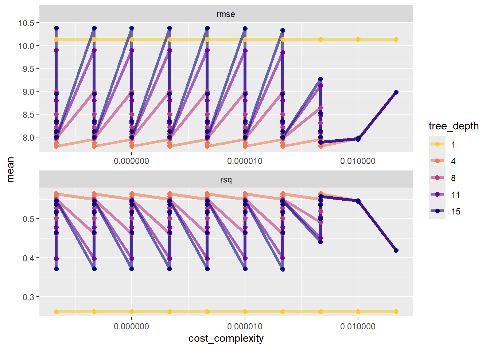
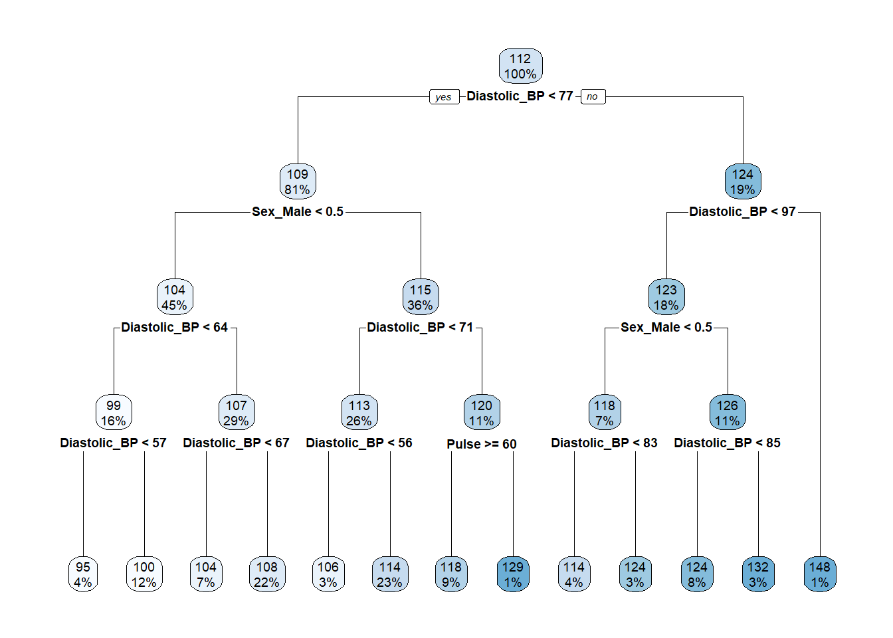

library(tidyverse)
library(tidymodels)
library(tree)Project3
Creating the models and choosing the best
Setting up the environment
Importing the data, creating splits and folds.
This modeling code was created to explore data from the CDC’s NHANES survey. While the full dataset has more variables, an EAPOST colleague, Dr. Laura Callis, sent this dataset around about a week ago. She had selected 7 which are related to heart rates, blood pressures, and caffine intake.
From the CDC’s Website (while it lasts): The National Health and Nutrition Examination Survey (NHANES) collects data about the health of adults and children in the United States. We also collect data about what participants eat, drink, and take as supplements to determine how many nutrients are in their diet. These dietary interviews and blood tests help us measure the nutritional status of U.S. adults and children. Learn more at the https://wwwn.cdc.gov/nchs/nhanes/.
First I want to pull in this NHANES data of 18 to 29 year-olds:
NHANES <- read.csv("data/NHANES_EnergyDrinks_BP_ages18-29.csv", na.strings = c("", "NA"))Because this data is not administrative data, nearly all of the cells have values. I’m going to drop the several without pulse rates, and then the admin variables that I don’t understand, Cycle and RecallDays.
NHANES <- NHANES |>
select(-Cycle, -RecallDays) |>
tidyr::drop_na(Pulse)
save(NHANES, file = "data/NHANES.RData")Now we will split the data into training and testing subsets
set.seed(852006)
NHANES_split <- rsample::initial_split(NHANES, prop = .7)
NHANES_train <- training(NHANES_split)
NHANES_test <- testing(NHANES_split)I used a 5 fold cross-validation to select the best model each family of models, setting up my own grid of tuning parameters for each model.
NHANES_CV_folds <- vfold_cv(NHANES_train, 5)Creating Models
At first I was using a different dataset, but the numeric variables in that dataset were not great as response variables to the other predictors. That is why I changed to this NHANES data instead. I have chosen a possible outcome variable: Systolic_BP, and made the reminaing variables my predictors.
Regression Tree Model
Since I am not using a categorical outcome variable, I’m not going to use a classification tree, but a regression tree instead. Regression tress create decision points, often called splits, which determine how to split the data into groups which will minimize the residual’s sum of squares within each of the nodes which follow.
# Outcome Vars: Systolic_BP
# Predictor Vars: Diastolic_BP, Pulse, Age, Sex, EnergyDrink, Caffeine_mg
tree_rec <- recipe(Systolic_BP ~ Diastolic_BP + Pulse + Age + Sex + EnergyDrink + Caffeine_mg,
data = NHANES_train) |>
# create dummys:
step_dummy(all_nominal_predictors())
tree_rec── Recipe ──────────────────────────────────────────────────────────────────────── Inputs Number of variables by roleoutcome: 1
predictor: 6── Operations • Dummy variables from: all_nominal_predictors()tree_mod <- decision_tree(tree_depth = tune(),
min_n = tune(),
cost_complexity = tune()) |>
set_engine("rpart") |>
set_mode("regression")
tree_wkf <- workflow() |>
add_recipe(tree_rec) |>
add_model(tree_mod)Here I have decided to use RMSE (Root Mean Squared Error) as my primary metric of performance. Systolic Blood Pressure is a continuous numeric variable, which means RMSE is well suited to interpret results, and to penalize large prediction errors more heavily than Mean Absolute Error. Hopefully that will encourage the tuning to select a model that avoids large mispredicitions.
tree_grid <- grid_regular(cost_complexity(),
tree_depth(),
min_n(),
levels = c(10, 5, 5))
tree_fits <- tree_wkf |>
tune_grid(resamples = NHANES_CV_folds,
grid = tree_grid)
tree_fits |>
collect_metrics() |>
mutate(tree_depth = factor(tree_depth)) |>
ggplot(aes(cost_complexity, mean, color = tree_depth)) +
geom_line(linewidth = 1.5, alpha = 0.6) +
geom_point(size = 2) +
facet_wrap(~ .metric, scales = "free", nrow = 2) +
scale_x_log10(labels = scales::label_number()) +
scale_color_viridis_d(option = "plasma", begin = .9, end = 0)
Select the best regression tree and finalize the workflow
tree_fits |>
collect_metrics() |>
filter(.metric == "rmse") |>
arrange(mean)# A tibble: 250 × 9
cost_complexity tree_depth min_n .metric .estimator mean n std_err
<dbl> <int> <int> <chr> <chr> <dbl> <int> <dbl>
1 0.0000000001 4 21 rmse standard 7.80 5 0.286
2 0.000000001 4 21 rmse standard 7.80 5 0.286
3 0.00000001 4 21 rmse standard 7.80 5 0.286
4 0.0000001 4 21 rmse standard 7.80 5 0.286
5 0.000001 4 21 rmse standard 7.80 5 0.286
6 0.00001 4 21 rmse standard 7.80 5 0.286
7 0.0001 4 21 rmse standard 7.80 5 0.286
8 0.001 4 21 rmse standard 7.80 5 0.286
9 0.0000000001 4 40 rmse standard 7.80 5 0.290
10 0.000000001 4 40 rmse standard 7.80 5 0.290
# ℹ 240 more rows
# ℹ 1 more variable: .config <chr>tree_best_params <- select_best(tree_fits, metric = "rmse")
tree_best_params# A tibble: 1 × 4
cost_complexity tree_depth min_n .config
<dbl> <int> <int> <chr>
1 0.0000000001 4 21 pre0_mod008_post0tree_final_wkf <- tree_wkf |>
finalize_workflow(tree_best_params)
tree_final_fit <- tree_final_wkf |>
last_fit(NHANES_split, metrics = metric_set(rmse, rsq, mae))
tree_final_fit# Resampling results
# Manual resampling
# A tibble: 1 × 6
splits id .metrics .notes .predictions .workflow
<list> <chr> <list> <list> <list> <list>
1 <split [1352/580]> train/test split <tibble> <tibble> <tibble> <workflow>tree_final_fit |>
collect_metrics()# A tibble: 3 × 4
.metric .estimator .estimate .config
<chr> <chr> <dbl> <chr>
1 rmse standard 8.06 pre0_mod0_post0
2 rsq standard 0.552 pre0_mod0_post0
3 mae standard 6.39 pre0_mod0_post0tree_final_model <- extract_workflow(tree_final_fit)
tree_final_model══ Workflow [trained] ══════════════════════════════════════════════════════════
Preprocessor: Recipe
Model: decision_tree()
── Preprocessor ────────────────────────────────────────────────────────────────
1 Recipe Step
• step_dummy()
── Model ───────────────────────────────────────────────────────────────────────
n= 1352
node), split, n, deviance, yval
* denotes terminal node
1) root 1352 187266.600 111.94110
2) Diastolic_BP< 77.15 1095 104256.800 109.01030
4) Sex_Male< 0.5 602 36578.870 104.29750
8) Diastolic_BP< 63.5 215 11808.140 99.15163
16) Diastolic_BP< 56.5 52 3513.837 95.09231 *
17) Diastolic_BP>=56.5 163 7164.086 100.44660 *
9) Diastolic_BP>=63.5 387 15914.610 107.15630
18) Diastolic_BP< 66.5 93 3041.341 104.26130 *
19) Diastolic_BP>=66.5 294 11847.250 108.07210 *
5) Sex_Male>=0.5 493 37980.200 114.76510
10) Diastolic_BP< 70.5 348 22034.810 112.74940
20) Diastolic_BP< 56.15 42 2200.864 106.41190 *
21) Diastolic_BP>=56.15 306 17915.520 113.61930 *
11) Diastolic_BP>=70.5 145 11138.060 119.60280
22) Pulse>=60 126 8259.062 118.26030 *
23) Pulse< 60 19 1146.089 128.50530 *
3) Diastolic_BP>=77.15 257 33532.080 124.42800
6) Diastolic_BP< 97 242 22236.760 122.97070
12) Sex_Male< 0.5 98 6693.341 118.34390
24) Diastolic_BP< 83.15 57 2420.909 114.28070 *
25) Diastolic_BP>=83.15 41 2023.128 123.99270 *
13) Sex_Male>=0.5 144 12017.790 126.11940
26) Diastolic_BP< 84.5 109 7896.530 124.21930 *
27) Diastolic_BP>=84.5 35 2502.022 132.03710 *
7) Diastolic_BP>=97 15 2489.136 147.94000 *# I think I want to save this file for my api to acces.
#png("tree_plot.png", width = 800, height = 600, res = 120)
tree_final_model |>
extract_fit_engine() |>
rpart.plot::rpart.plot(roundint = FALSE)
#got an error after saving the image, but google says I need to fix it with this:
#dev.off()Okay, this tree is way better than the one that I had for my original data. In that one, the cost complexity selected by the cross-valudation was so large it pruned the tree down to a single node. This one was way better, with notes for different Sex, Diastolic BPs and one node about Pulse rate. Sadly, it doesn’t seem to care at all about Age, Caffeine or EnergyDrinks.
Random Forest Models
We use the random forest because they randomly select a subset of the varaiables that are allowed to be chosen at each node. This decreases the correlation, espeically at the first node, and thus is a more robust model overall.
rf_spec <- rand_forest(mtry = tune(), min_n = tune(), trees = 500) |>
set_engine("ranger", importance = "impurity") |>
set_mode("regression")
rf_wkf <- workflow() |>
add_recipe(tree_rec) |>
add_model(rf_spec)Tune using the training-set cross-validation folds
rf_grid <- grid_regular(
mtry(range = c(2, 6)),
min_n(range = c(5, 25)),
levels = 4
)
set.seed(9261979)
rf_fit <- rf_wkf |>
tune_grid(resamples = NHANES_CV_folds,
grid = rf_grid,
metrics = metric_set(rmse, rsq, mae))
rf_fit |>
collect_metrics() |>
filter(.metric == "rmse") |>
arrange(mean)# A tibble: 16 × 8
mtry min_n .metric .estimator mean n std_err .config
<int> <int> <chr> <chr> <dbl> <int> <dbl> <chr>
1 4 25 rmse standard 7.57 5 0.285 pre0_mod12_post0
2 3 25 rmse standard 7.58 5 0.291 pre0_mod08_post0
3 4 18 rmse standard 7.58 5 0.279 pre0_mod11_post0
4 3 18 rmse standard 7.60 5 0.290 pre0_mod07_post0
5 6 25 rmse standard 7.61 5 0.266 pre0_mod16_post0
6 4 11 rmse standard 7.62 5 0.275 pre0_mod10_post0
7 3 11 rmse standard 7.63 5 0.278 pre0_mod06_post0
8 6 18 rmse standard 7.65 5 0.261 pre0_mod15_post0
9 3 5 rmse standard 7.67 5 0.279 pre0_mod05_post0
10 4 5 rmse standard 7.68 5 0.274 pre0_mod09_post0
11 2 11 rmse standard 7.70 5 0.297 pre0_mod02_post0
12 6 11 rmse standard 7.71 5 0.262 pre0_mod14_post0
13 2 18 rmse standard 7.71 5 0.298 pre0_mod03_post0
14 2 5 rmse standard 7.72 5 0.281 pre0_mod01_post0
15 2 25 rmse standard 7.74 5 0.302 pre0_mod04_post0
16 6 5 rmse standard 7.75 5 0.271 pre0_mod13_post0Select the best random forest and finalize the workflow
rf_best_params <- select_best(rf_fit, metric = "rmse")
rf_best_params# A tibble: 1 × 3
mtry min_n .config
<int> <int> <chr>
1 4 25 pre0_mod12_post0rf_final_wkf <- rf_wkf |>
finalize_workflow(rf_best_params)
rf_final_fit <- rf_final_wkf |>
last_fit(NHANES_split, metrics = metric_set(rmse, rsq, mae))
rf_final_model <- extract_workflow(rf_final_fit)Select the best model from each type
Again, I’ve chosen RMSE as the metric for these models. Now I will compare each on the test set to figure out which is working the best.
bind_rows(
tree_final_fit |> collect_metrics() |> mutate(Model = "Regression Tree"),
rf_final_fit |> collect_metrics() |> mutate(Model = "Random Forest")
)# A tibble: 6 × 5
.metric .estimator .estimate .config Model
<chr> <chr> <dbl> <chr> <chr>
1 rmse standard 8.06 pre0_mod0_post0 Regression Tree
2 rsq standard 0.552 pre0_mod0_post0 Regression Tree
3 mae standard 6.39 pre0_mod0_post0 Regression Tree
4 rmse standard 7.75 pre0_mod0_post0 Random Forest
5 rsq standard 0.585 pre0_mod0_post0 Random Forest
6 mae standard 6.14 pre0_mod0_post0 Random Forest Okay, so the best is the random forest model, and so I will fit that on the entire dataset.
set.seed(10122015)
overall_best_model <- rf_final_wkf |>
fit(data = NHANES)
overall_best_model══ Workflow [trained] ══════════════════════════════════════════════════════════
Preprocessor: Recipe
Model: rand_forest()
── Preprocessor ────────────────────────────────────────────────────────────────
1 Recipe Step
• step_dummy()
── Model ───────────────────────────────────────────────────────────────────────
Ranger result
Call:
ranger::ranger(x = maybe_data_frame(x), y = y, mtry = min_cols(~4L, x), num.trees = 500, min.node.size = min_rows(~25L, x), importance = "impurity", num.threads = 1, verbose = FALSE, seed = sample.int(10^5, 1))
Type: Regression
Number of trees: 500
Sample size: 1932
Number of independent variables: 6
Mtry: 4
Target node size: 25
Variable importance mode: impurity
Splitrule: variance
OOB prediction error (MSE): 58.00556
R squared (OOB): 0.5865765 This is the model that I’m going to use in my API.